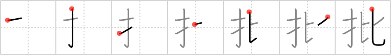

批
← →
criticism

Reading:
On-Yomi: ヒ
Heisig story:
Finger . . . compare.
Koohii stories:
1) [richcoop] 15-7-2008(213): My criticism earned me the FINGER when I COMPARED her cooking to my mother's.
2) [matticus] 18-11-2005(171): Think of the two most famous critics, Ebert and Roeper. On their show, they compare thumbs (which are technically fingers) with each other before dispensing criticism.
3) [Raichu] 19-4-2008(98): Criticism is pointing at your finger at someone and comparing them with someone perfect.
4) [dingomick] 9-8-2007(46): Criticism is a comparison of fingers: thumbs up or down.
5) [sarek05] 30-6-2008(32): I took it as a criticism when my girlfriend compared my…well, you know…to her pinky finger.